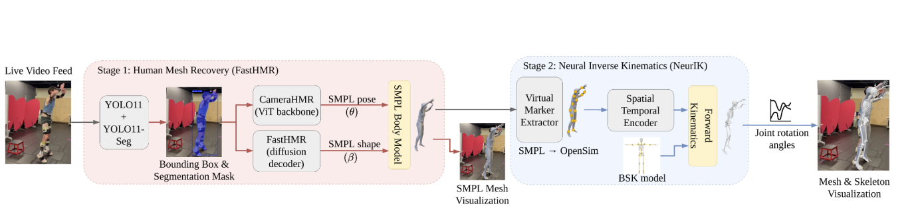
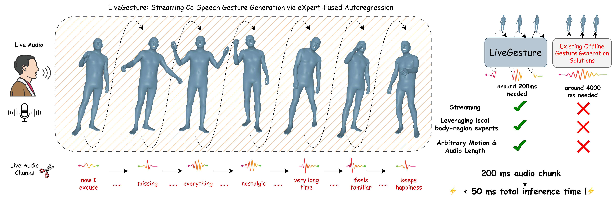

Research Lead
Lowe's
Charlotte, NC
Applied Scientist II · Amazon
I'm an Applied Scientist II at Amazon, where I develop large-scale multimodal AI systems for real-world operational and customer experiences. I received my Ph.D. in Computer Science from the University of North Carolina at Charlotte in 2026, advised by Prof. Pu Wang in the GENIUS Lab. I was previously a Research Scientist Intern at Google's Extended Reality (AR/VR) team. My work includes a U.S. Patent on 3D human pose and movement estimation from monocular images.
My research focuses on building multimodal foundation models that unify real-time perception with high-fidelity synthesis. I aim to develop context-aware AI systems capable of perceiving, reconstructing, and interacting with complex human behavior across both physical and virtual environments. My work centers on multimodal motion synthesis frameworks that enable controllable, high-quality 3D human animation for real-time applications, as well as 3D human pose estimation and mesh reconstruction using generative masked modeling. Ultimately, I seek to leverage these generative foundations to create AI systems that can both understand human behavior in the physical world and synthesize interactive digital counterparts within immersive XR environments.
Open to research collaborations and opportunities — reach me at usama.saleem7977@gmail.com.


| Aug | 2026 | Real-Time Neural Musculoskeletal Pose Estimation demo paper published at IEEE/ACM CHASE 2026. |
| Jun | 2026 | MAGE on modality-agnostic music generation released on arXiv. |
| Jun | 2026 | M2M-HMR accepted to ECCV 2026 (Oral). |
| Mar | 2026 | Joined Amazon as Applied Scientist II (Full-Time). |
| Mar | 2026 | Completed Ph.D. from UNC Charlotte. Dissertation: Towards Generative Modeling of 3D Humans From Multimodal Signals. |
| Mar | 2026 | U.S. Patent published: 3D human pose and movement from monocular images. |
| Feb | 2026 | LiveGesture accepted to CVPR 2026. |
| Nov | 2025 | DanceMosaic accepted to AAAI 2026. |
| Oct | 2025 | Joined Google as Research Scientist Intern — Extended Reality (AR/VR). |
| Oct | 2025 | MaskControl selected for Oral Presentation & Best Paper Award Nominee at ICCV 2025. |
| July | 2025 | Poster selected at Amazon WWAS Science Fair Seattle. |
| June | 2025 | MaskHand & MaskControl accepted to ICCV 2025. |
| Dec | 2024 | GenHMR accepted to AAAI 2025, presented in Philadelphia. |
| Oct | 2024 | BioPose accepted to WACV 2025. |
| July | 2024 | BAMM accepted to ECCV 2024. |
| Sept | 2023 | Joined Lowe's as Research Lead of the CV & UNCC Team. |
| June | 2023 | DPFedProxGAN accepted to IJCNN 2023. |
| July | 2022 | Privacy Enhancement for Few-Shot Learning accepted to IJCNN 2022. |
| Jan | 2022 | DP-Shield accepted to EDBT 2022. |



